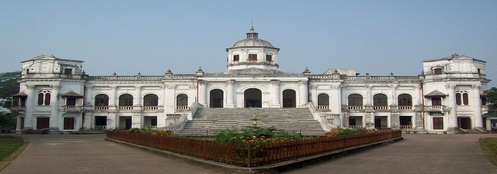
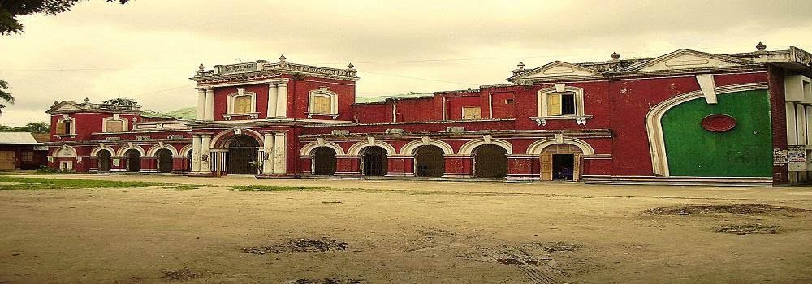
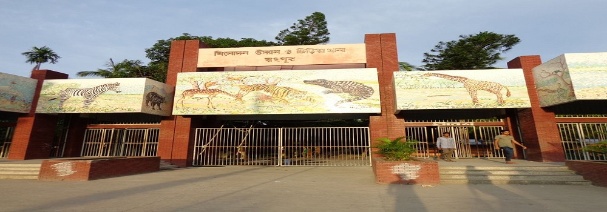
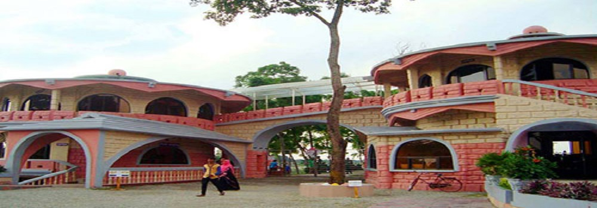
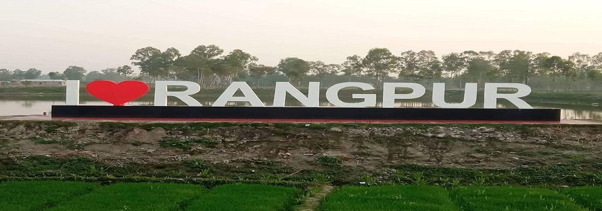

1 / 6 Tajhat Jomidarbari

2 / 6 Town Hall

3 / 6 Rangpur Zoo

4 / 6 Ghaghot Sena Proyas Park

5 / 6 Taraganj eco Park

6 / 6 Parbotipur Railway Station

Tajhat Palace, Tajhat Rajbari, is a historic palace of Bangladesh, located in Tajhat, Rangpur.[1] This palace now holds the Rangpur museum.[2] Tajhat Palace is situated three km. south-east of the city of Rangpur, on the outskirts of town.
Rangpur Town Hall is the traditional center for the whole cultural and political activities in Rangpur. Town Hall is holding the tradition and memory of almost a century. This is not just an auditorium, but rather a cultural, political, and social center.
Recreation Park and Rangpur Zoo, (Bengali: বিনোদন উদ্যান ও রংপুর চিড়িয়াখানা) is located in Rangpur, Bangladesh, is the largest zoo in North Bengal and the second largest in Bangladesh in terms of size. Rangpur Central Zoo is one of the recreation spots in Rangpur city.
বাংলাদেশ সেনাবাহিনী প্রায় ১১০০ একর জায়গা নিয়ে ২০১৩ সালে ঘাঘট নদীর দুপাশে গড়ে তুলেছে প্রয়াস সেনা বিনোদন পার্ক। নদী পারাপারের জন্য নৌকার ব্যবস্থা আছে। বেশ গোছানো এ পার্কের উপার্জনের ৭৫ শতাংশ ব্যয় হয় প্রতিবন্ধীদের কল্যাণে। সেনা চৌকি পুরো বিনোদন কেন্দ্রটিকে করেছে নিরাপদ ও নির্ঝঞ্ঝাট।চমৎকার মুখোমুখি বসবার জন্য ব্যবস্থা থাকায় কপোত-কপোতিদের উপস্থিতিই অধিক। এত চমৎকার স্পট এর আগে চোখে পড়েনি।সুন্দর জায়গা। তাই নদীর পাড়ে নির্মল বিনোদন উপভোগের এক অপূর্ব নিদর্শন।
বামনদিঘী (তারাগঞ্জ) ইকো পার্ক (এখনো কাজ চলতেছে) পরিবেশ : নিরিবিলি যাওয়ার নিয়ম: বাসঃ রংপুর মেডিকেল মোড় থেকে বাসে উঠে বামনদিঘী। ভাড়া ২০ টাকা। অথবা অটো :মেডিকেল মোড়ে অটো করে পাগলাপীর যাইতে হবে (ভাড়া ১৫ টাকা)। পাগলাপীর থেকে অটো,ভ্যান,সিএনজি করে বামনদিঘী (১০ টাকা ভাড়া)
During the British period all railway connections to Assam and North Bengal were through the eastern part of Bengal. From 1878, the railway route from Kolkata, then called Calcutta, to Siliguri was in two laps. The first lap was a 185 km journey along the Eastern Bengal State Railway from Calcutta Station (later renamed Sealdah) to Damookdeah Ghat on the southern bank of the Padma River, then across the river in a ferry and the second lap of the journey, which was a 336 km metre gauge line of the North Bengal Railway that linked Saraghat on the northern bank of the Padma to Siliguri.[1]